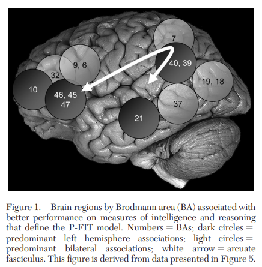

IQ
Intelligence
WARNING: THIS IS A WORK IN PROGRESS AND MAY NOT BE ENTIRELY SCIENTIFICALLY ACCURATE. PLEASE DO NOT QUOTE ME ON THIS STUFF SINCE THIS IS NOTHING MORE THAN A HOBBY
Definitions
Phenotypically useful definition: “Intelligence is a very general mental capability that, among other things, involves the ability to reason, plan, solve problems, think abstractly, comprehend complex ideas, learn quickly and learn from experience.” (Gottfredson 1997)
Statistically useful definition: “Intelligence is at the pinnacle of the hierarchical model of cognitive abilities that includes a middle level of group factors, such as the cognitive domains of verbal and spatial abilities and memory, and a third level of specific tests and their associated narrow cognitive skills.” (Plomin and Deary 2015)
Is it appropriate to define intelligence?
Regarding the philosophical nature of precisely defining intelligence, “we have, no doubt, a rough and ready idea of what we mean by ‘intelligence’ and other cognate terms. The objective of scientific enquiry is to advance beyond this primitive, common-sense understanding (what is often termed ‘folk psychology’) to a more securely grounded set of scientific theories, based on empirical evidence and capable of ordering the world in possibly new and illuminating ways. We shall not achieve this goal by insisting on a rigorous, precise definition of terms at the outset. New definitions are the end product of scientific enquiry, not its starting point” (Mackintosh 2011, 2)
We ask ourselves, “what is intelligence?” (eg. is it: processing speed; reaction time; working memory; verbal ability; spatial ability; rationality; practical intelligence; emotional intelligence etc;) Imagine a variable that predicts how someone does generally in all of these abilities. What should we call this variable?
The g factor
The variable described above is commonly referred to as the “general factor of intelligence” or g factor. The g factor is a statistical construct that represents an individual’s overall intelligence level, and it is considered to be a fundamental concept in the field of psychology.
The existence of the g factor has been supported by decades of research across a wide range of intelligence tests and measures. For example, individuals who perform well on one cognitive task, such as verbal ability, tend to perform well on other cognitive tasks, such as spatial ability, indicating a positive correlation between various cognitive abilities.
Moreover, the g factor has been found to predict a range of important life outcomes, such as academic and job performance, income level, and even health outcomes. Therefore, the g factor is not only a theoretical construct, but it also has practical implications for our understanding of human abilities and potential.
Nobody has ever been able to come up with an assessment for any sort of cognitive ability which does not correlate with the rest of them. The intercorrelations are caused by a general underlying factor which consistently explains half of the variance in a battery of cognitive ability tests (Mackintosh 2011, 45); (Deary 2001, 222); (Deary 1998); (Lubinski 2004, 98).
The CHC model
The Cattell-Horn-Carroll (CHC) theory of intelligence is a prominent model that attempts to explain the structure of cognitive abilities. The theory proposes that intelligence is composed of a hierarchical structure of three strata: the general factor (g factor), broad abilities, and narrow abilities.

At the top of the hierarchy is the g factor, which represents a general factor of intelligence that is common to all cognitive tasks. The broad abilities, located in the middle stratum, are a group of abilities that are less general than the g factor but still encompass a range of related cognitive tasks. Examples of broad abilities include fluid reasoning, crystallized intelligence, processing speed, and working memory. Finally, the narrow abilities, located at the bottom stratum, are specific abilities that are highly specialized and task-specific.
The CHC theory supports the existence of the g factor by showing that performance on different cognitive tasks is highly correlated, indicating a common underlying factor that influences performance across tasks. In addition, factor analyses of a wide range of intelligence tests consistently reveal a strong first factor that represents the g factor.
Moreover, the CHC theory provides a framework for understanding the relationships between the g factor and other cognitive abilities. For example, fluid reasoning is considered a broad ability that is strongly related to the g factor and is involved in abstract thinking and problem-solving. Crystallized intelligence, on the other hand, is a broad ability that represents the application of knowledge and skills acquired through experience and education and is less strongly related to the g factor.
Because it has an impressive body of empirical support in the research literature (e.g., developmental, neurocognitive, outcome‐criterion), this model of intelligence is the one that psychologists predominantly use. It is used extensively as the foundation for selecting, organizing, and interpreting tests of intelligence and cognitive abilities. (Alfonso et al. 2005);(Beal 2006);(McGrew et al. 2005);(Schneider et al. 2012) Additionally, this model is the most comprehensive and empirically supported psychometric theory of the structure of cognitive abilities to date. (Flanagan and Dixon 2014)
CHC is the best model from exploratory factor analysis (J. B. Carroll, B, and Press 1993) and is confirmed by confirmatory factor analysis (Gustafsson 1984); (J. Carroll 2003) (Jewsbury, Bowden, and Duff 2017). Confirmatory factor analysis showed that purposely different IQ batteries (CAB, Hawaii Battery, WAIS, etc) were analyzed, and it turned out that the g factors computed from the respective tests were statistically indistinguishable from one another, despite the fact that the tests tapped into partly different sets of abilities. (Johnson et al. 2004); (Johnson, Nijenhuis, and Bouchard 2008)
Neurobiological theories
The leading neurobiological theory for intelligence is called the Parieto-Frontal Integration Theory (P-FIT). It has been described as “the best available answer to the question of where in the brain intelligence resides” (Deary and Penke 2010)

Above is a visual representation of P-FIT. In this model, there are several brain regions, mostly located in the frontal lobe (towards the front of the brain) and the parietal lobe (on the top part of the brain, somewhat towards the rear), that are connected with a white matter tract called the arcuate fasciculus. According to the P-FIT model’s creators, g arises from both how well these areas function and how well they are connected to one another in the brain (Jung and Haier 2007). This explains two initial hurdles to understanding how g relates to the brain. The first is why there is no one area in the brain that is activated when a person engages in reasoning tasks. The second hurdle is why several previous studies had suggested that the size and use of multiple areas in the parietal and frontal lobes were correlated with IQ.
Euler (2018) has recently proposed another theory of how the brain generates g. Rather than focusing on specific brain regions, Euler has built on the predictive processing theory of brain functioning, which posits that the brain is a “prediction machine” that is adapted to help an organism form expectations about the environment and to give attention to events that violate those expectations (e.g., the presence of a danger in a location that the person thought was safe). Euler believes that intelligence may be the manifestation of the brain’s ability to handle unexpected situations and that more intelligent people are better able to manage unexpected events than people with less intelligence. This theory would explain why intelligence differences are more apparent in more complex tasks. Other characteristics of intelligence that predictive processing theory could explain are the positive manifold, why cognitive abilities may form a hierarchy (like in the Cattell–Horn–Carroll model), and why so many different tasks can measure g.
This is just a hint at the non-neurological data that support predictive processing theory, and it has the potential to serve as a bridge between the neurology of brain functioning and manifestations of intelligence in people’s behavior. Readers should recognize that predictive processing and P-FIT are not necessarily contradictory. Predictive processing is based mostly on research about brain functioning, while P-FIT is based mostly on brain-imaging data about the size and performance of larger brain regions. It is possible that both theories are correct and that predictive processing explains how the brain generates intelligent behavior while using the regions highlighted in the P-FIT model.